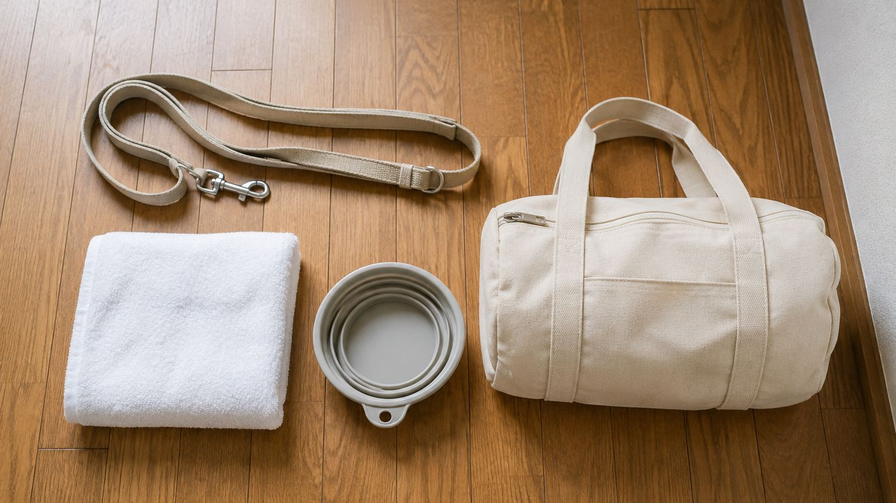

サンプル：愛犬と泊まるときの持ち物リスト

わんちゃんとのお泊まりが初めてという方から、「何を持っていけばいいですか」とよくご質問をいただきます。あると安心なものをまとめました。
まず用意しておきたいもの
食べ慣れたごはんと食器、リード、そして体を拭くタオル。この3つがあると、たいていのことはなんとかなります。ごはんは環境が変わると食べる量が変わることがあるので、ふだんと同じものをお持ちいただくと安心です。
お薬を飲んでいるわんちゃんは、忘れずにお持ちください。
あると便利なもの
おうちで使っている毛布やマットなど、においのついたものがひとつあると、慣れない場所でも落ち着いて過ごせることが多いです。折りたためる食器や、抜け毛を取るブラシもあると便利です。
お部屋にご用意しているものについてはゲストハウスのページと、各お部屋の詳細ページをご覧ください。
到着してからのこと
着いてすぐは、においを確認したり落ち着かなかったりするわんちゃんもいます。無理に慣れさせようとせず、しばらくそばにいてあげてください。
分からないことがあれば、いつでもお声がけください。お問い合わせのページからもご相談いただけます。